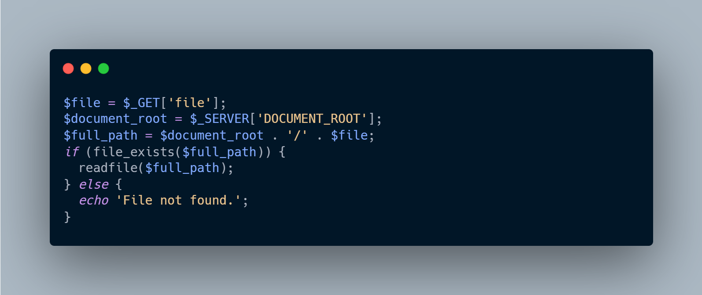
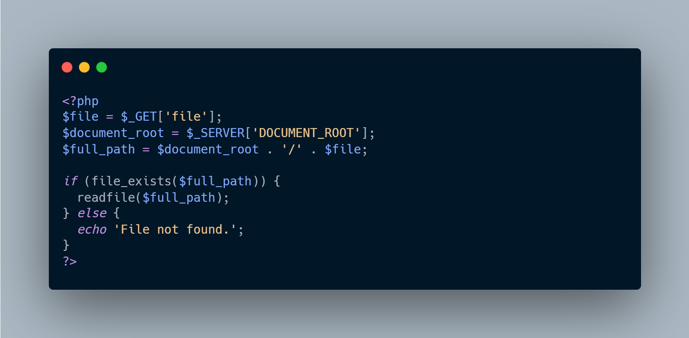
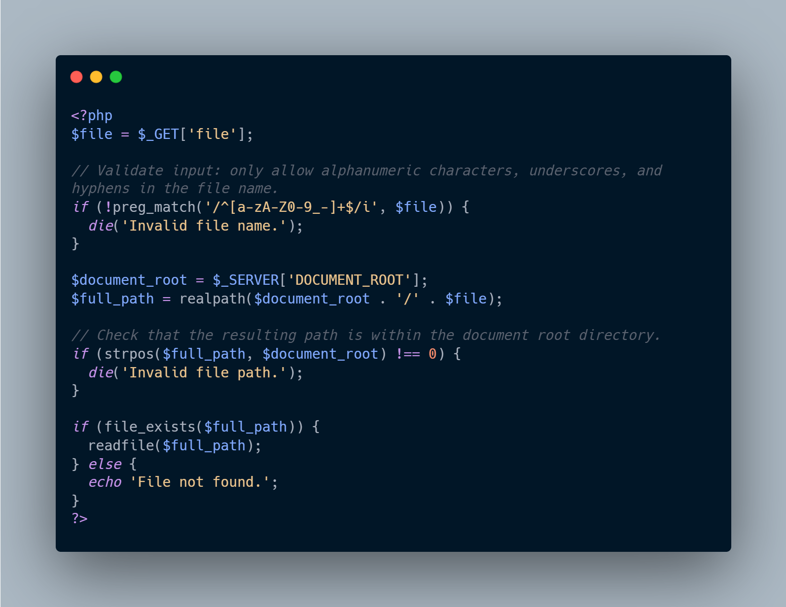
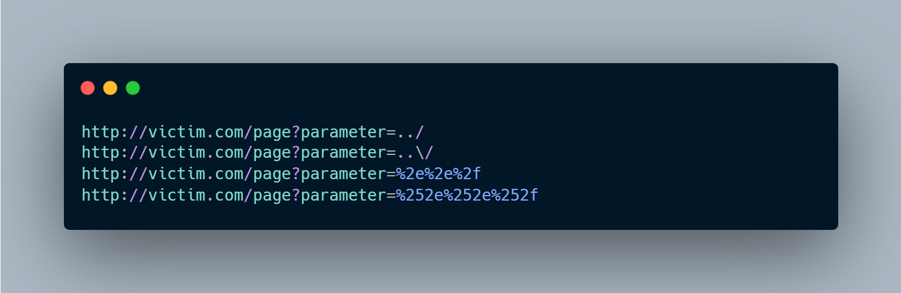
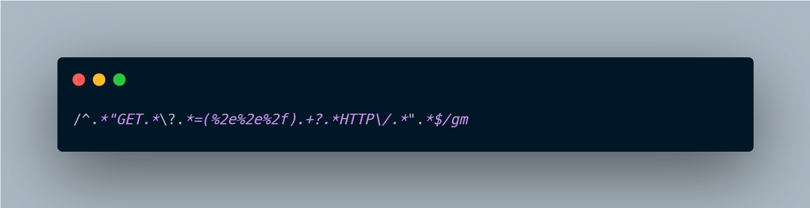
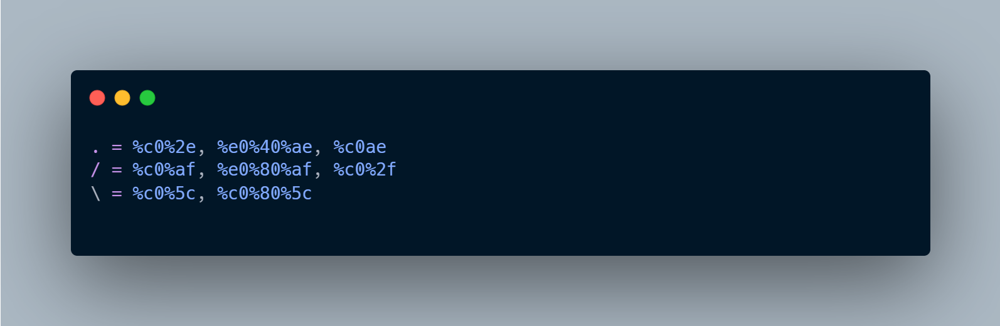
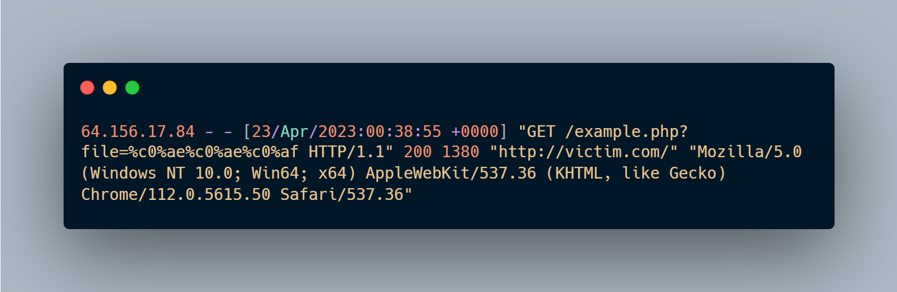
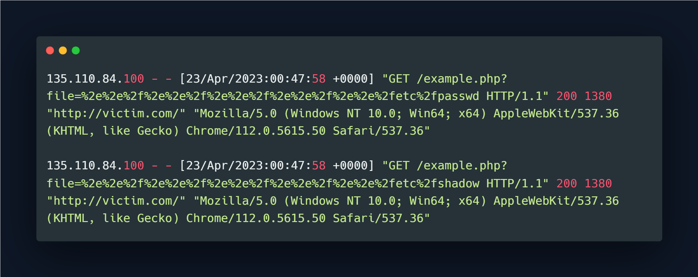

What is Directory Traversal?
Directory traversal is an attack type that the attackers leverage often to access files and directories that are stored outside the web server’s root directory. It involves manipulating input to be able to access files on a web server that are actually not intended to be accessible by unauthorized users. This type of attack is also known as the “dot-dot-slash” attack, and it can be used to gain unauthorized access to sensitive data or execute arbitrary code on a web server.
For example, let’s say a web application uses the following URL to display user profile pictures: http://example.com/profiles/picture.php?name=user1.jpg
{kind=link}
An attacker can leverage directory traversal attack to access files outside of the intended directory by adding ../ to the URL. For instance, they could use the following URL to access a file outside of the profiles directory: http://example.com/profiles/picture.php?name=../../etc/passwd
This would give the attacker access to sensitive system files, such as the password file.
Actually, at first look, it’s pretty similar to a Local File Inclusion vulnerability. The main difference between the directory traversal and LFI is the source of the input. Directory traversal involves in manipulating the input that is used to access files on a web server, whereas LFI involves in manipulating input that is used to include local files within a web application.
In a local file inclusion vulnerability, an attacker can use user input to include a file from the local file system into the web application. This can allow the attacker to execute arbitrary code on the server to access the sensitive data.
For example, consider a web application that includes a file based on user input, such as include($_GET[‘page’]). An attacker could manipulate the page parameter to include a sensitive file on the server, such as ../../../../etc/passwd. This would allow the attacker to read the password file and gain unauthorized access to the system.
In contrast, directory traversal vulnerabilities allow attackers to access files outside of the web application’s root directory. This can also allow them to execute arbitrary code or access sensitive data, but the attack vector is different.
Directory Traversal Possible Vectors
Directory traversal attacks can occur through various attack vectors, including:
- User input: Attackers can manipulate user input parameters, such as URLs, file paths, and form fields, to access files outside of the intended directory. This can be done by adding “../” or other special characters to the input.
- Cookies: If a web application stores user data in cookies, attackers can try to manipulate the cookie value to access files outside of the intended directory.
- HTTP headers: Attackers can manipulate HTTP headers, such as the Referer or User-Agent header, to access files outside of the intended directory.
- File upload: If a web application allows file uploads, attackers can upload malicious files that contain directory traversal attacks.
- Direct requests: Attackers can try to access files and directories directly by guessing or brute-forcing the file names or paths.
- URL manipulation: Attackers can try to manipulate the URL of a web application to access files outside of the intended directory. For example, they can add ”/../” to the URL to go up one directory level.
- Malicious links: Attackers can send users malicious links that contain directory traversal attacks. When the user clicks on the link, the attack is executed on their computer.
How Directory Traversal Works?
Here’s an example of vulnerable code that is susceptible to directory traversal attacks in a PHP script:

In this example, the script takes a file name as a parameter from the user input using the $_GET method. The script then concatenates the user input with the document root directory to form a full path to the file.
However, this code is vulnerable to directory traversal attacks since an attacker can manipulate the file parameter to include ../ characters, which will allow them to access files outside of the intended directory. For example, an attacker could use the following URL to access the /etc/passwd file on the server:

Impact of Directory Traversal
The impact of a directory traversal attack can be severe, depending on the files and directories that the attacker can access.
Attackers who successfully exploits a directory traversal vulnerability can view, modify, or delete files that they are not authorized to access. This can lead to a variety of security risks and attacks, including:
- Disclosure of sensitive data: An attacker can access sensitive files, such as password files, configuration files, and user data, which can be used for identity theft, fraud, or other malicious activities.
- Execution of arbitrary code: An attacker can upload and execute malicious files that contain commands or code that can harm the system, such as malware or backdoors.
- Denial of service: An attacker can delete critical files or cause a system to crash, resulting in a denial of service attack.
- System compromise: An attacker who gains access to system files or directories can use
Prevention Methods for Directory Traversal Attacks
Here are some best practices to prevent directory traversal attacks in web applications:
-
Input validation and sanitization: Validate and sanitize all user input, especially the file paths and the directory names. This can involve using regular expressions or other methods to check the input for valid characters, and to limit the input to known values or directories.
-
Access controls: Limit the web server’s access to only the files and directories required for the application to function. Use file the system permissions and access controls to restrict access to sensitive files and directories.
-
Relative file paths: Use relative file paths instead of absolute paths whenever possible. This can prevent attackers from using the “../” character to navigate up to higher-level directories.
-
Whitelisting: Use a whitelist approach where only specific characters are allowed in the file name parameter. This can be done using a validation library or a custom validation function.
-
Secure coding practices: Use secure coding practices, such as avoiding the use of user input directly in file path concatenation, using secure file upload mechanisms, and avoiding the use of insecure functions like eval() and system().
-
Web application firewall: Use a web application firewall (WAF) to detect and block directory traversal attacks. WAFs can analyze incoming traffic for malicious requests and prevent attacks from reaching the web application.
By following these best practices, web application developers and administrators can reduce the risk of directory traversal attacks and protect their web applications and systems from unauthorized access and data breaches.
Here’s an example of vulnerable PHP code that is susceptible to directory traversal attacks:

In this code, the file variable is set to the value of the file parameter from the user’s input. The script then concatenates this value with the document root directory to form a full file path in the $full_path variable. This code is vulnerable to directory traversal attacks because an attacker can include directory traversal sequences like ../ in the file parameter to access files outside of the intended directory.
Here’s an updated version of the code that uses input validation and sanitization to prevent directory traversal attacks:

In this updated version of the code, we first validate the input using a regular expression to ensure that the file name only contains alphanumeric characters, underscores, and hyphens. We then use the realpath() function to get the absolute path of the file and check that the resulting path is within the document root directory. This prevents the use of directory traversal sequences like ../ to access files outside of the intended directory. If the file exists, we read and output its contents; otherwise, we output an error message.
Detecting Directory Traversal Attacks
In Part 1, we have overviewed what the directory traversal attack is and how to prevent this attack type. In this part, we’ll have a look at detection techniques and some tips to make it easier. Before the moving on, let’s have a quick look for example payloads for the directory traversal vulnerability;

These are really basic payloads for directory traversal attacks. So, we should keep in mind ../ (dot dot slash), encoded and double encoded ../ is the key values for this attack type. Here is the basic example for detecting these payloads on nginx access.log file;
/^.”GET.?.=(%2e%2e%2f).+?.HTTP/.“.$/gm

As a bypass technique, attackers may also use unicode encode characters to bypass WAF or any other product.

In that case, Nginx access log will be like;

These are detection payloads for the Directory Traversal attack. For a successful exploit, attacker needs to access some files. most popular ones are;
Linux
- /etc/issue
- /etc/passwd
- /etc/shadow
- /etc/group
- /etc/hosts
Windows
- c:/boot.ini
- c:/inetpub/logs/logfiles
- c:/inetpub/wwwroot/global.asa
- c:/inetpub/wwwroot/index.asp
- c:/inetpub/wwwroot/web.config
- c:/sysprep.inf

Basic regex that we have shared above will work with these logs but to prevent False Positive alarms it can be updated more strictly like;
/^.”GET.?.=(.+?(?=%2e%2e%2fetc%2f)).+?.HTTP/.“.$/gm